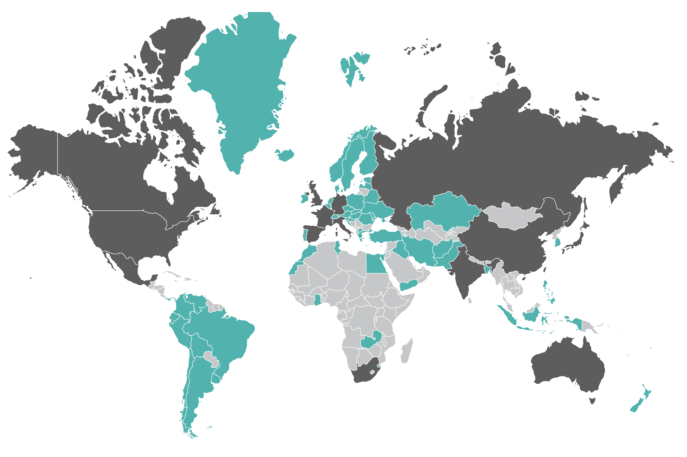

Convicted serial killers by country
Countries with 10 or more serial killers
Countries with fewer than 10 serial killers
Countries with no
recorded serial killers
serial killers
325
United States
Theodore “Ted” Robert Bundy
AKA: Richard Burton; Theodore Robert Cowell; Chris Hage; Kenneth Misner; Officer Roseland
Years active: 1974–78
Number of victims: 30+
Motive: Power/control
Canada
18
serial killers
Gilbert Paul Jordan
AKA: The Boozing Barber; Paul Pearce; Gilbert Paul Elsie
Years active: 1965–2004
Number of victims: 8–10
Motive: Power/control
Mexico
27
serial killers
Francisco Guerrero Pérez
AKA: El Chalequero; The Mexican Ripper; Antonio Prida
Years active: 1880–1908
Number of victims: 21
Motive: Mission-oriented
United Kingdom
65
serial killers
Amelia Elizabeth Dyer
AKA: Amelia Elizabeth Hobley; The Reading Baby Farmer; Mrs. Thomas; Ogress of Reading
Years active: Unknown–1896
Number of victims: 200–400
Motive: Comfort (profit)
Spain
14
serial killers
José Antonio Rodríguez Vega
AKA: El Mataviejas; The Old Lady Killer
Years active: 1987–88
Number of victims: 16+
Motive: Power/control
France
38
serial killers
Catherine Monvoisin
AKA: Catherine Deshayes; La Voisin
Years active: 1660–79
Number of victims: 1,000–2,500
Motive: Power/control; comfort (profit)
Australia
Canada
China
France
Germany
India
Italy
Japan
Mexico
Russia
South Africa
Spain
United Kingdom
United States

Australia
34
serial killers
William MacDonald
AKA: The (Sydney) Mutilator
Years active: 1961–62
Number of victims: 5
Motive: Hedonistic thrill
China
13
serial killers
Yang Xinhai
AKA: The Monster Killer; The Monster Henan
Years active: 1999–2003
Number of victims: 67
Motive: Mission-oriented
Germany
55
serial killers
Adolf Seefeldt
AKA: The Sandman; Uncle Tick Tock; Uncle Adi
Years active: 1908–35
Number of victims: 12+
Motive: Hedonistic lust
India
19
serial killers
Raman Raghav
AKA: The Ripper; Psycho Raman; Sindhi Dalwai; Veluswami
Years active: 1965–68
Number of victims: 41
Motive: Visionary
Italy
14
serial killers
Maurizio Minghella
AKA: Travolta of Val Polcevera (because he liked disco)
Years active: 1978–2001
Number of victims: 10–15
Motive: Power/control
Japan
14
serial killers
Miyuki Ishikawa
AKA: Oni-Sanba; Demon Midwife
Years active: 1944–48
Number of victims: 103–169
Motive: Comfort (profit); Visionary
Russia
91
serial killers
Darya Nikolayevna Saltykova
AKA: Saltychikha
Years active: 1755–62
Number of victims: 38–147
Motive: Power/control
South Africa
23
serial killers
Elifasi Msomi
AKA: The Axe Killer
Years active: 1953–55
Number of victims: 15
Motive: Visionary
Source: Wikipedia; Leff analysis
Select country name
to learn more